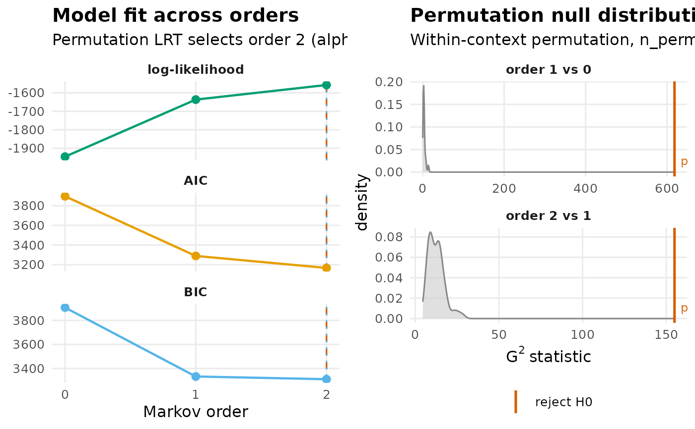

markov_order_test() tests how many previous states are needed to
predict the next one in a set of categorical sequences: the order of the
Markov chain that describes them. At each order
\(k = 1, \ldots,\) max_order it tests the null hypothesis that order
\(k - 1\) is enough, with the likelihood-ratio statistic \(G^2\) for
the conditional independence \(s \perp x \mid w\),
where \(w\) is the \((k-1)\)-gram context, \(x\) the extra state
\(k\) steps back and \(s\) the next state. The p-value comes from a
permutation null, with the asymptotic \(\chi^2\) p-value beside it for
reference, and the order is chosen sequentially. It reads wide sequence
tables, lists of sequences, sequence networks (single or grouped) and
prepare() results.
The order is raised while the test rejects and stops at the first
non-rejection, so the selected order is the highest \(k\) whose test,
and every test below it, rejected at alpha: 0 when order 1 is
already not rejected, and max_order when every test rejects. AIC and
BIC of the fitted chains are reported beside it and can select a
different order. With many observations even small departures from the
lower order are rejected, so compare the log-likelihoods of neighbouring
orders as well. A first-order network from build_network() assumes
order 1; when a higher order is selected, build_hon() and
build_mogen() model the longer memory.
Usage
markov_order_test(
data,
max_order = 3L,
n_perm = 500L,
alpha = 0.05,
parallel = FALSE,
n_cores = 2L,
seed = NULL,
dof = c("paths", "observed")
)
# S3 method for class 'net_markov_order'
print(x, ...)
# S3 method for class 'net_markov_order_group'
print(x, ...)
# S3 method for class 'net_markov_order'
summary(object, ...)
# S3 method for class 'net_markov_order'
plot(x, panel = c("both", "ic", "permutation"), combined = TRUE, ...)Arguments
- data
The sequences: a data frame with one row per sequence and one column per position, a list of character vectors (one per sequence), a sequence
netobjectornetobject_groupbuilt with its data, or aprepare()result (its sequence data is used). A data frame is read whole, so it must hold only positions: one column, or columns named as a numbered run (T1,T2, ...); anything else, such as an id column beside the positions, a column namedaction, or columns holding only 0 and 1, raises an error of classnestimate_bad_input, and the positions are then declared withbuild_network()(state_cols, oractionfor an event log) and the network passed instead. A one-hot or association network raises the same error. Sequences are split at missing values: no window spans anNA, and pieces with fewer than two states are dropped.- max_order
The highest order to test, at least 1. Default
3. It is lowered, with a message, to one less than the length of the longest sequence.- n_perm
The number of within-context permutations per order, at least 1. Default
500. The smallest attainable p-value is1 / (n_perm + 1), and a test rejects only when its p-value is belowalpha, so with1 / alpha - 1permutations or fewer (19 for the defaultalpha) no order above 0 can be selected.- alpha
The significance level for the sequential selection, strictly between 0 and 1. Default
0.05.- parallel
Whether to run the permutations with
parallel::mclapply(). DefaultFALSE. Ignored on Windows, where they run serially. WithTRUEthe permutations are reproducible fromseedonly underRNGkind("L'Ecuyer-CMRG"); under the default generator they differ from run to run.- n_cores
The number of cores for
parallel = TRUE. Default2.- seed
An integer that makes the permutations reproducible (with
parallel = TRUE, only under the L'Ecuyer-CMRG generator). DefaultNULL. The session's own random stream is left as it was; a group's networks are each started from the same seed.- dof
How the AIC and BIC columns count each layer's parameters:
"paths"(default) counts every transition the observed first-order topology allows, as in Scholtes (2017) and pathpy;"observed"counts the transitions seen in the data, the rule before Nestimate 0.9.28. The permutation test does not use it.- x
For the
print()methods: anet_markov_orderornet_markov_order_group; for theplot()method: anet_markov_order.- ...
For the
print()method of anet_markov_order_group: passed on to theprint()of each group. For the other methods: not used.- object
For the
summary()method: anet_markov_order.- panel
For the
plot()method: which panels to draw."both"(default),"ic"(the fit across orders) or"permutation"(the permutation nulls); a single panel is returned as a ggplot.- combined
For the
plot()method withpanel = "both":TRUE(default) draws the two panels side by side and returns them as one gtable when gridExtra is installed, or, without it, draws them with grid viewports and returns the two ggplots (ic,permutation) invisibly as a named list.FALSEreturns that list invisibly without drawing. Ignored for a single panel.
Value
A net_markov_order object. print() shows the data size, the
order each criterion selects and the test table; summary() returns
the test table with the selected orders, alpha and n_perm as
attributes; plot() draws the fit across orders and the permutation
null of each test, and returns a ggplot, a gtable or a list of the two
ggplots (see panel and combined). For a netobject_group, the
result is a net_markov_order_group, a named list of
net_markov_order objects, one per group, whose print() prints
each. The print() methods return their input invisibly. The
net_markov_order's fields:
- optimal_order
The order selected by the sequential permutation test.
- bic_order, aic_order
The orders with the lowest BIC and AIC, shown by
print()andplot()and not used in the selection.- test_table
The test table, one row per order from 0 to
max_order, with columnsorder,loglik,AIC,BIC,df,g2,p_permutation,p_asymptoticandsignificant. The order-0 row hasNAin the test columns (dftosignificant).- permutation_null
The permutation null of \(G^2\) at each order, a list of numeric vectors named
order_1,order_2, ...- logliks
The log-likelihood of each order, as a named numeric vector (for the AIC and BIC columns only; not used in the test).
- layer_dofs
The parameters added at each order, as a named numeric vector, counted as set by
dof.- dof_method
"paths"or"observed".- transition_matrices
The fitted transition matrices, the order-0 state distribution first.
- states
The observed states.
- n_sequences, n_observations
The number of sequences (after splitting at missing values) and of observed states.
- n_perm, alpha, max_order
The settings used;
max_orderis the highest order actually tested.
Details
Under the null hypothesis the successors are exchangeable within each
context \(w\), so shuffling \(s\) within each \(w\)-group keeps
every count the null hypothesis conditions on, with no plug-in estimate
and no refit per permutation. The windows of a sequence overlap, so
this approximates the reference distribution of \(G^2\) rather than
giving it exactly (an exact test would sample whole sequences with the
same counts; Besag & Mondal, 2013). The permutation p-value is
(number of permutations with a G^2 at least the observed + 1) / (n_perm + 1). An order at which no context holds both two different
extra states and two different successors has no degrees of freedom; it gets
no p-value and counts as not rejected.
The AIC and BIC columns come from the log-likelihood of each order's
fitted chain and its cumulative number of parameters (see dof); BIC
takes the number of observations (observed states) as the sample size.
The deterministic columns agree with tna::markov_order() (tna 1.4.1
or later).
Plot panels
- Fit across orders (
"ic") The log-likelihood, AIC and BIC of each order, one facet each, with a dashed line at the order the permutation test selects and a dotted line at the order with the lowest BIC.
- Permutation nulls (
"permutation") The density of the permutation null of \(G^2\) for each order, one facet each, with the observed \(G^2\) as a vertical line labelled with its p-value and coloured by whether the test rejects at
alpha.
The lines and labels use the Okabe-Ito palette; the null densities are grey.
References
Besag, J., & Mondal, D. (2013). Exact goodness-of-fit tests for Markov chains. Biometrics, 69(2), 488–496. doi:10.1111/biom.12009
Scholtes, I. (2017). When is a network a network? Multi-order graphical model selection in pathways and temporal networks. In Proceedings of the 23rd ACM SIGKDD International Conference on Knowledge Discovery and Data Mining (pp. 1037–1046). doi:10.1145/3097983.3098145
Examples
# Is one previous state enough to predict the next one?
res <- markov_order_test(as.data.frame(trajectories),
max_order = 2, n_perm = 99, seed = 1)
res
#> Markov Order Test [within-w permutation, n_perm = 99, alpha = 0.050]
#> 131 sequences / 1865 observations / 3 states
#>
#> Selected order BIC: 2 AIC: 2 permutation-LRT: 2
#>
#> order loglik AIC BIC df g2 p_permutation p_asymptotic
#> 0 -1945.82 3895.63 3906.69 NA NA NA NA
#> 1 -1636.59 3289.19 3333.43 4 618.31 0.01 1.691520e-132
#> 2 -1557.51 3167.02 3310.83 12 154.97 0.01 5.554253e-27
#> significant
#> NA
#> TRUE
#> TRUE
summary(res)
#> order loglik AIC BIC df g2 p_permutation p_asymptotic
#> 1 0 -1945.815 3895.630 3906.692 NA NA NA NA
#> 2 1 -1636.593 3289.185 3333.434 4 618.3053 0.01 1.691520e-132
#> 3 2 -1557.511 3167.023 3310.829 12 154.9677 0.01 5.554253e-27
#> significant
#> 1 NA
#> 2 TRUE
#> 3 TRUE
plot(res)
